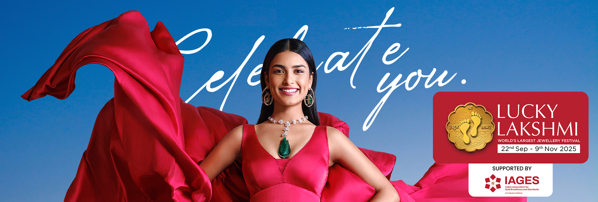
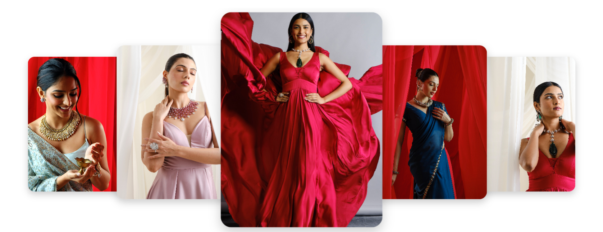
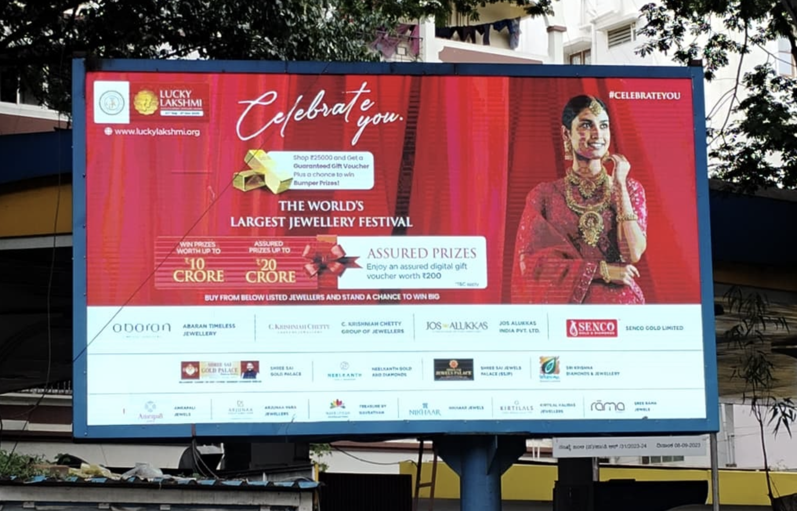
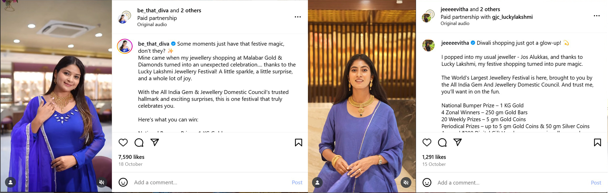
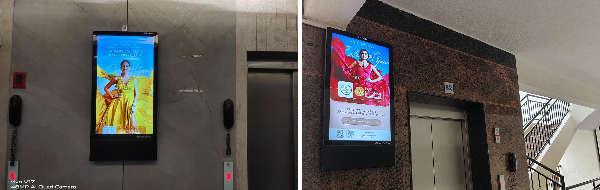
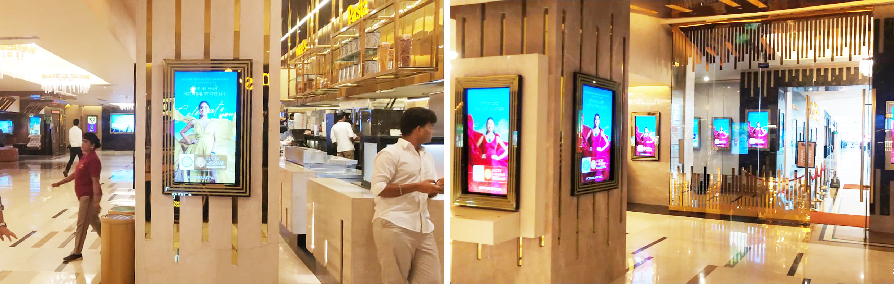
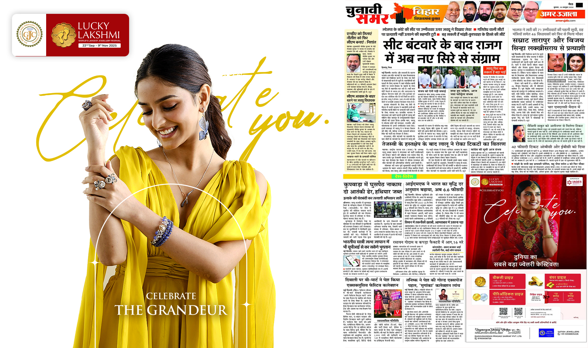

Lucky Lakshmi, recognised as the world's largest jewellery festival, generates a nationwide festive atmosphere.

Lucky Lakshmi: A Festive Symphony of Success Across India's Jewellery Retail
LandscapeThe glitter of gold found a new radiance this festive season as the Lucky Lakshmi campaign, hailed as the world's largest jewellery festival, concluded with resounding success across India. What began as a marketing initiative by the All-India Gem and Jewellery Domestic Council (GJC) evolved into a nationwide celebration that united jewellers, consumers, and festive aspirations under one dazzling umbrella.
By every measure, Lucky Lakshmi was not just another promotional campaign. It became a movement that illuminated retail counters, rekindled consumer confidence, and reaffirmed the sheer vitality of India's jewellery industry.

A Celebration of Prosperity and ParticipationFrom the very beginning, Lucky Lakshmi struck a chord with both consumers and retailers. Thousands of participating jewellers from every region of the country, from bustling metros to smaller towns, registered in overwhelming numbers. The initiative transformed jewellery stores into destinations of excitement, hope, and shared celebration. Consumers thronged showrooms, eager not only to purchase exquisite pieces but also to participate in a festival that promised both emotion and opportunity.
The rewards were as glittering as the ornaments themselves. Every purchase worth ₹25,000 and in multiples of that amount came with assured digital gift vouchers worth ₹200, redeemable from a curated selection of top lifestyle brands such as BookMyShow, Domino's Pizza, Uber, and Myntra. Weekly draws offered 5 gram gold coins, while the much-coveted periodical prizes included 1 gram and 5 gram gold coins and silver coins of 10 and 50 grams in 99.9 purity.
A Case Study in 360 Degree Marketing Excellence
"Lucky Lakshmi has emerged as one of the most impactful initiatives in the jewellery sector, successfully driving both sales and brand visibility for retailers across India,"
observed Avinash Gupta, Vice Chairman of GJC. His words captured the essence of a
campaign
that was nothing short of a marketing masterstroke.The initiative's brilliance lay in
its multi-channel strategy, an integrated promotional
plan that harnessed the
power of digital, print, radio, influencer marketing, and on-ground engagement. From
city
billboards to mobile
screens, Lucky Lakshmi was omnipresent, radiating festive fervour and brand trust in
equal
measure.

The campaign was active across eighty-seven cities, encompassing over eleven thousand
apartment screens in nine
major metros, ensuring constant recall among urban audiences. Digital campaigns split evenly
between Meta and Google
platforms garnered an astonishing ten crore plus impressions and a reach of over six crore
consumers. Every
advertisement, post, and jingle became a festive whisper reminding India that prosperity was
not just a purchase
away but a celebration to be shared.Radio Mirchi amplified the cheer with more than nine thousand five hundred radio spots across thirty-one cities, echoing the festival's rhythm through airwaves that reached every household. On Hotstar, Lucky Lakshmi gained 3.6 million impressions during marquee shows, connecting premium digital audiences with retail floors. The print campaign, spread strategically across four major cities, further strengthened the trust and credibility associated with the initiative, while outdoor hoardings dominated skylines across Tier 1 and Tier 2 markets.
This seamless orchestration of online and offline engagement made Lucky Lakshmi a textbook example of how traditional retail can thrive through digital symphony.
Festive Momentum and Industry Trust
For Rajesh Rokde, Chairman of GJC, the campaign was more than a marketing triumph; it was a reaffirmation of the jewellery industry's collective resilience.
"Since the very beginning, Lucky Lakshmi has been a remarkable success story for the jewellery industry. It has created a strong festive momentum across markets, boosting retail sales and uniting jewellers nationwide under one powerful initiative," he shared.
Indeed, this trust was visible in the numbers and narratives emerging from across the country. Jewellers who participated reported unprecedented footfalls and higher conversions. The initiative's structure, designed to reward every purchase, encouraged consumers to increase their spending thresholds, translating sentiment into measurable business growth.
The festival not only revitalized festive shopping but also restored the emotional connect between consumers and local jewellers. In an era where online convenience often overshadows personal touch, Lucky Lakshmi reminded India that jewellery buying is an experience steeped in tradition, emotion, and human connection.
Driving Retail Revival Through Innovation
The jewellery industry has long relied on the festive calendar as a barometer of economic sentiment. Yet, in recent years, shifting consumer habits and competitive pressures from other luxury segments had diluted this seasonal fervour. Lucky Lakshmi changed that narrative.
By combining data-driven digital marketing with grassroots engagement, GJC managed to create a campaign that resonated with both millennials and legacy customers. The use of influencer marketing added a modern sheen where fashion, lifestyle, and aspiration intersected seamlessly with jewellery's timeless allure.

This was not just festive marketing. It was retail transformation in motion. The initiative set a benchmark for how industry-wide collaboration can uplift thousands of businesses simultaneously. From small family-run jewellers in towns such as Salem and Surat to large showrooms in Mumbai and Delhi, every participant found themselves part of a shared national celebration.

Stories from the GroundRetailers reported not just increased sales, but also a palpable change in customer sentiment. Many consumers viewed their participation in Lucky Lakshmi as a good omen, blending the act of purchase with the joy of winning. For jewellers, the festival brought a renewed sense of community, bridging competition with collaboration.
In states such as Maharashtra, Tamil Nadu, Gujarat, and Kerala, jewellers described queues reminiscent of pre-pandemic festive seasons. The campaign's digital vouchers further added to the allure, providing instant gratification in a market that values both emotional and tangible rewards.
The campaign also stood out for its inclusivity. Every jeweller, regardless of scale, could participate and benefit. This democratization of opportunity was one of Lucky Lakshmi's defining strengths, reinforcing the idea that collective celebration yields collective prosperity.

Creating a Blueprint for the FutureAs the campaign concluded, it left behind more than glowing reports and smiling winners. It offered a replicable model for industry-led marketing in the new age. The GJC's foresight in conceptualizing Lucky Lakshmi as a national movement demonstrated how strategic storytelling and integrated outreach could redefine jewellery retailing.
By aligning every touchpoint, from digital impressions to movie screens and radio frequencies, the campaign ensured no consumer segment was left untouched. It was, in many ways, a mirror to modern India's evolving consumer psyche-aspirational yet rooted, digital yet deeply personal.
Lucky Lakshmi proved that marketing in the jewellery industry is no longer confined to glittering showcases and festive discounts. It is about narrative, emotion, and engagement. It is about weaving prosperity into people's lives, not just through the sparkle of gold, but through the joy of participation.

A Golden AfterglowAs jewellers now prepare to carry forward the momentum, Lucky Lakshmi stands as proof of what industry unity can achieve. It showcased how coordinated promotion, creative strategy, and emotional storytelling can revive festive commerce on an unprecedented scale.
The campaign's success also hinted at a larger shift, one where India's jewellery retail sector is embracing innovation with open arms. From digital tools to influencer collaborations, the traditional industry is evolving without losing its soul.
For consumers, Lucky Lakshmi became more than a shopping experience. It was a celebration of fortune and faith. For retailers, it became a reminder that when an industry moves together, it does not just sell jewellery, it creates joy, trust, and continuity.
As Avinash Gupta summed it up, "It is heartening to see how this initiative is transforming the retail landscape and bringing measurable business growth to our industry."
And in those words lies the sparkle of Lucky Lakshmi's true triumph, not just in the glitter of gold won, but in the glow of confidence rekindled across India's jewellery trade.
